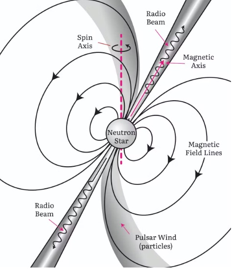

Neutron stars are the collapsed cores of massive stars. Those that emit beams of electromagnetic radiation are classified as pulsars.
The MeerTRAP team discovered this star in the Milky Way about 1,300 light years away from Earth in the Vela-X 1 region.
They were intrigued by this star that did not last 20-30 milliseconds. They searched older data from the region.
This new star resides in the neutron star “graveyard”. This is a region of space where we don’t expect to detect any radio emissions at all, since it’s theorised the neutron stars here are at the end of their life cycle and therefore not active (or less active).
Interesting Fact: the longest known rotation period for a pulsar before this new star was 23.5 seconds.